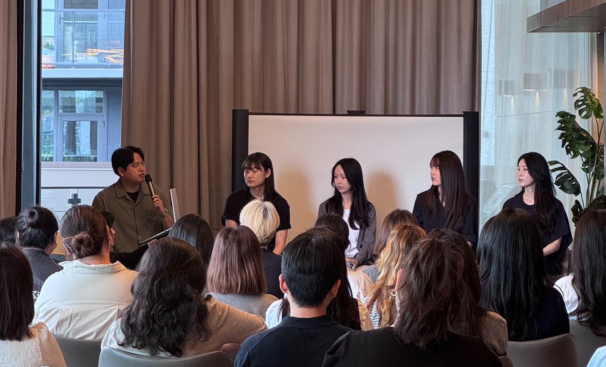
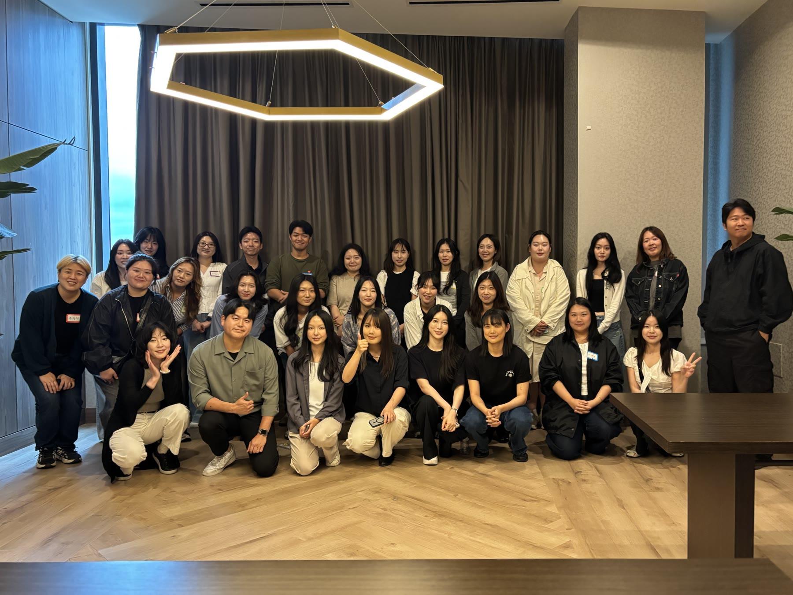

CASponsored by KDNEW · Career Fireside Chat · Burnaby · Jul 2026
Building a Career in Canada on a Working Holiday
I co-hosted a KDNEW-sponsored Career Fireside Chat in Burnaby for people who wanted to start a career in Canada while here on a working holiday. As one of five speakers, I shared the choices and difficulties that shaped my own start—and why honest self-assessment is the first step I would take if I were beginning again.

The challenge was deciding what applied
I came to Canada on a working holiday and started my career here. In the session, I walked through the choices I made, the difficulties I encountered, and what I would examine first if I were starting over.
Information about building a career in Canada is easy to find. The harder question is which advice fits your experience, strengths, English communication skills, and current situation. We shaped the event around that challenge: helping participants identify what they needed, not simply giving them more information.
Why honest self-assessment comes first
The point I emphasized was simple: start with an honest self-assessment. Before sending more applications or following someone else’s approach, I asked participants to examine their starting point through four questions.
“What are you good at?”
“Where are you in your career right now?”
“How confidently can you communicate your experience in English?”
“Can you clearly explain the value of your experience in Korea to Canadian employers?”
Self-assessment is not about cataloguing weaknesses. It is about recognizing the strengths and experience you already have, understanding where you stand, and choosing a realistic next step.
Together, the questions turned self-assessment into a practical starting point.
Different ways to start, not one formula
Each of the five speakers had started a career in Canada differently. We shared what we tried, how we made decisions, and where we struggled.
Hearing those differences gave participants several real experiences to compare with their own situation, rather than one success story to treat as a formula.
Networking continued after the main session
After the main session, participants exchanged LinkedIn profiles and continued conversations with others facing similar questions.
One participant later messaged me to say that the discussion about self-assessment had been especially helpful. Self-assessment was the point I had emphasized most, so that message stayed with me. It showed that the session had given at least one participant a useful way to examine what to do next.
A clearer starting point mattered more than one answer
Our five stories showed that starting a career in Canada does not follow one formula. The next step depends on the experience and strengths someone brings, how clearly they can communicate that value in English, and what their current situation allows.
I wanted participants to leave with a clearer view of their own starting point and new professional contacts they could stay in touch with after the event. If they could see themselves more clearly and choose a next step that fit their situation, the event had done what I hoped it would do.
